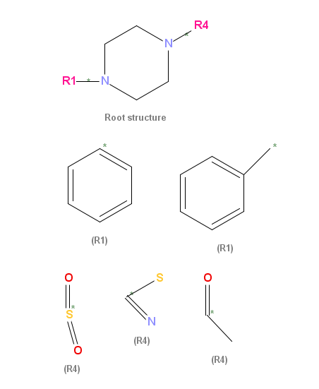
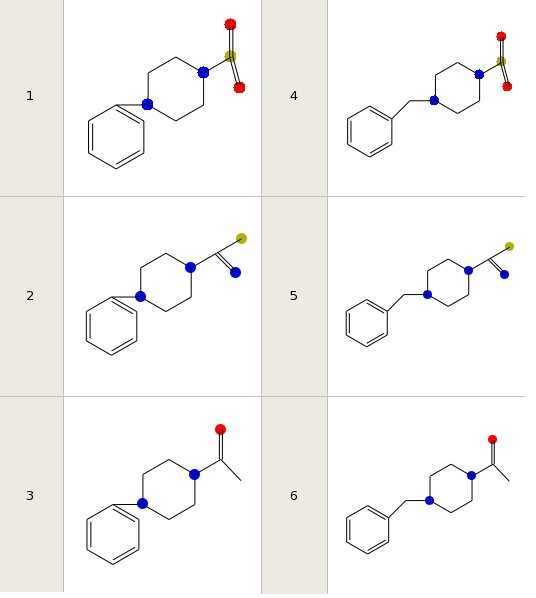

IntroductionQueries in Orchem are performed by classes located in Java package 'uk.ac.ebi.orchem.search':
Note that whenever the database is 'cold' (just been restarted or idle for a while), the initial OrChem query will be less responsive. The DBMS always needs to time to warm up the cache a bit. Similarity searchingPackage orchem_simsearch :FUNCTION SEARCH RETURNS ORCHEM_COMPOUND_LIST Argument Name Type In/Out Default? ------------------------------ ----------------------- ------ -------- USER_QUERY CLOB IN QUERY_TYPE VARCHAR2 IN CUTOFF NUMBER(126) IN TOPN NUMBER IN DEFAULT DEBUG_YN VARCHAR2 IN DEFAULT RETURN_IDS_ONLY_YN VARCHAR2 IN DEFAULTThe search function in orchem_simsearch performs a similarity search using the following arguments:
Examples
select * from
table(orchem_simsearch.search(
'OC4=C(C(=C3OC(C)(COC=1C=CC(=CC=1)CC2C(=O)NC(=O)S2)CCC3=C4C)C)C'
,'SMILES',0.8,null,'N'))
This query performs a similarity search for a compound described with a Smiles string.
The cutoff is set to 0.8, so only results with similarity of 80% or higher will be returned.
There is no topN value, so the query will not limit the result set. Debugging is set to 'N'.
select * from
table(orchem_simsearch.search(
'O(C=1C=CC=C2C=1CCCC2CN(C)CCC3=CC=C4C(=C3)NCC4)C','SMILES',0.5,5,'Y'))
A bit like the previous one, with different Smiles and cutoff. This time, debugging is switched on and
topN=5, so the search will stop if the 5 best scoring results have been found.
By using topN you can make the query more responsive.
SQL>desc compounds Name Type -------------------- -------------- MOLREGNO NUMBER(38) MOLWEIGHT NUMBER MOLFORMULA VARCHAR2(250) MOLFILE CLOB select orchem_simsearch.search(MOLFILE,'MOL',0.75,50,'N') from COMPOUNDS where MOLREGNO=666
This query you'd have to adapt to make it work for you. For completeness the particular compound
table is described first (desc compounds)
The query finds all compounds that are similar to compound with id ('MOLREGNO') 666. The MOLFILE column is fed into the search function, QUERY_TYPE is set to 'MOL'. To make the query work for you, you should replace MOLFILE with your mol file column name, COMPOUNDS with your compound table name and finally MOLREGNO with your primary key name. By the way, you can run a TABLE() function over the previous query as shown here. This make JDBC access more straightforward.
select * from table
( select orchem_simsearch.search(molfile,'MOL',0.7,5,'N')
from compounds where molregno=1000
)
Substructure searchingPackage orchem_subsearch :FUNCTION SEARCH RETURNS ORCHEM_COMPOUND_LIST Argument Name Type In/Out Default? ------------------------------ ----------------------- ------ -------- USERQUERY CLOB IN INPUT_TYPE VARCHAR2 IN TOPN NUMBER(38) IN DEFAULT DEBUG_YN VARCHAR2 IN DEFAULT RETURN_IDS_ONLY_YN VARCHAR2 IN DEFAULT STRICT_STEREO_YN VARCHAR2 IN DEFAULTThe search function in orchem_subsearch performs a non parallelized substructure search using the following arguments:
SQL> set arraysize 1 Examples
select * from
table(orchem_subsearch.search('N#CC2=CC=1C=CC=CC=1N3C=C(N=C23)C(=O)OCC','SMILES',50,'Y'))
This query performs a substructure search for a structure described with a Smiles string.
TopN=50, so after 50 results have been found the query exits. The query will debug some info back to you.
select orchem_subsearch.search(molfile,'MOL',50,'Y') from compounds where molregno=12345Refer to the similarity search section for an explanation of this type of query. Parallel substructure searchingPackage orchem_subsearch_par:FUNCTION SEARCH RETURNS ORCHEM_COMPOUND_LIST Argument Name Type In/Out Default? ------------------------------ ----------------------- ------ -------- QUERY_KEY NUMBER(38) IN TOPN NUMBER(38) IN DEFAULT FUNCTION SETUP RETURNS NUMBER(38) Argument Name Type In/Out Default? ------------------------------ ----------------------- ------ -------- USER_QUERY CLOB IN QUERY_TYPE VARCHAR2 INA parallel substructure search can be used as an alternative to the normal substructure search. The resultset of both searches will be the same, but the response time will differ. The parallel implementation is such that the query needs an extra step. This extra step is purely for technical reasons: with the implementation using a piped parallel function and parallel Java slave processes, the extra 'preparation' step is necessary. The reward may be in the performance: the parallel function can run significantly faster, but not always (!) depending on many things. Examples
To prepare the query, you use SETUP. This function takes in a query and a query type, and
then returns a number (the 'key'). The key is then fed into the parallel search.
See the next example, where a parallel search for S:C-O-C-C-C is prepared
an then executed with TopN 100.
SQL> var key number;
SQL> exec :key :=orchem_subsearch_par.setup('S:C-O-C-C-C','SMILES')
SQL> select id from table (orchem_subsearch_par.search(:key,100) )
Substructure searching with SMARTSPackage orchem_smarts_search :FUNCTION SEARCH RETURNS ORCHEM_COMPOUND_LIST Argument Name Type In/Out Default? ------------------------------ ----------------------- ------ -------- SMARTS_QUERY CLOB IN DEBUG_YN VARCHAR2 IN DEFAULT TOPN NUMBER(38) IN DEFAULTThe search function in orchem_smarts_search performs a SMARTS substructure search using the following arguments.
Example
select * from table ( orchem_smarts_search.search('N1CC[O,N]CC1') )
Substructure searching with RGroup QueriesRGroup queries are defined by the Symyx RGfile format, more details for which can be found in the "CTfile Formats" manual downloadable from Symyx.Editors such as JChempaint and Marvin Sketch can save drawings in this RGfile format, and OrChem accepts it as input and can run substructure searches for them. Because RGroup queries are saved as "Molfiles", the way to invoke an RGroup search is the same as for a regular substructure search, with the INPUT_TYPE set to MOL. OrChem will figure out if the given USERQUERY is a regular molecule or an RGroup query by inspecting the file contents. In essence, an RGroup query allows you to define multiple molecules in one data structure by combining a root structure that contains one or more pseudo atoms with different substituent options for each of these pseudo atoms. A JChemPaint screenshot may help to clarify this:  This given example contains a root structure (or scaffold) with two RGroups labeled "R1" and "R4". For R1, two substituents are defined and drawn under the root, R4 has three substituents. A number of different molecules can thus be derived by substituting R1 and R4 with one of their substituents. Substituents are to be attached to the root by replacing the R-atom with the atom marked with an asterisk in the substituent. It will connect to the root using the bond that is also marked with an asterisk, although in the example this is trivial. If an R-atom has multiple bonds connecting it to the root, then a second root attachment can be chosen. Be aware that the RGfile format allows for only two attaching bonds per R-atom to be identified, not more. Furthemore, "advanced RGroup logic" in the RGfile format allows you to define extra logic on top of the drawn structures. For each group you can indicate:
To continue the example, assuming Occurrence is ">0" (so, effectively 1) for both R1 and R4, OrChem would let the CDK create all possible configurations and then run a substructure search for each of these. So in effect, an RGroup query results in a run of sequential substructure searches for each valid configuration. The example has six valid configurations depicted below, so six searches are performed.  A quick note on JDBCJava developers, please refer to the OrChem CVS repository to find Java classes that use the search packages through JDBC calls. Examples can be found in classes such as uk.ac.ebi.orchem.shared.DatabaseAccess.Back to main page |